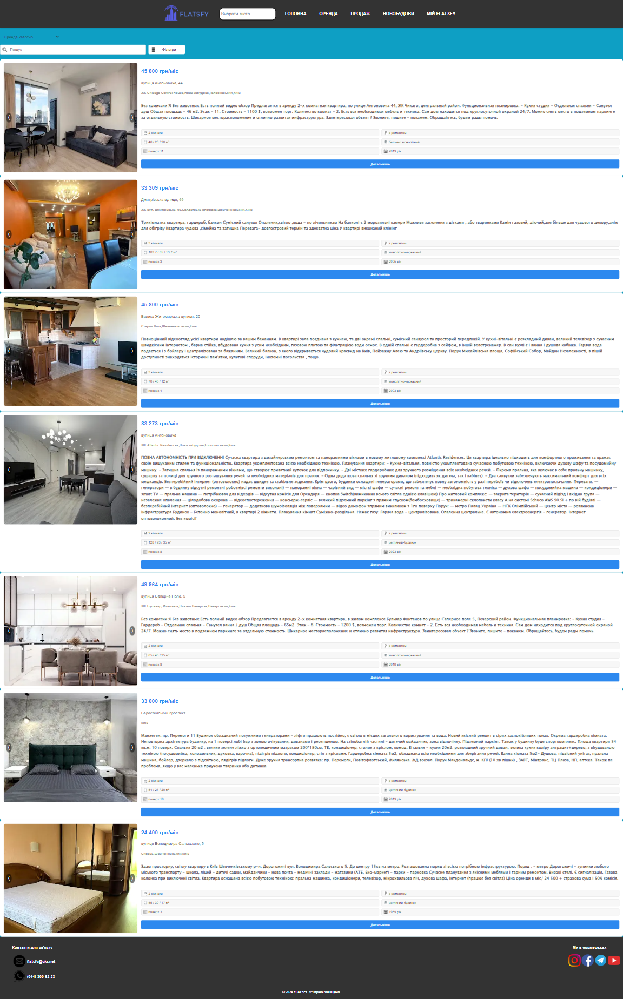
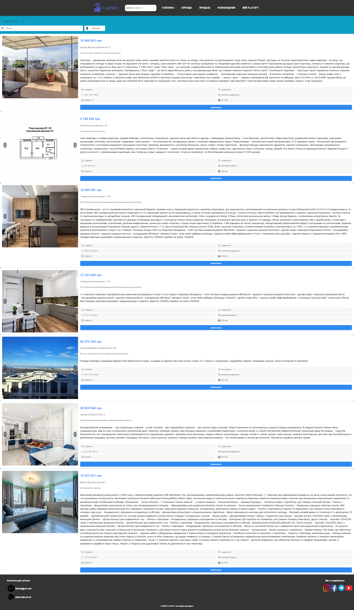

Адаптивна верстка сайту
Мобільна версія сайту
Коли активується мобільна версія сайту (ширина екрану ≤ 600px):
- Показується кнопка для відкриття меню.
- Навігація прихована, але при натисканні стає вертикальною.
- Таблиці змінюються: рядки блокуються, клітинки і заголовки розтягуються на всю ширину.
- Футер і контактна інформація вирівнюються по центру та стають вертикальними.
Планшетна/ноутбучна версія сайту
У планшетній/ноутбучній версії сайту (ширина екрану від 600px до 1560px):
- Кнопка для мобільного меню приховується.
- Навігація стає горизонтальною, елементи вирівнюються по центру.
- Таблиці мають сірі контури, а заголовки рядків змінюють фон на темно-зелений.
- Футер стає горизонтальним, елементи розподіляються по краях.
- Центральні блоки вирівнюються по центру та центруються текстом.
Десктопна версія сайту
У десктопній версії сайту (ширина екрана більше 1560px):
- Навігація вирівнюється по центру.
- Таблиці отримують світло-сірі контури для кращої видимості.
- Заголовки таблиць мають тінь і жирний шрифт, що покращує їх контрастність і акцентує увагу.
- Футер розподіляє елементи по краях, вирівнюючи їх до верхньої частини.

